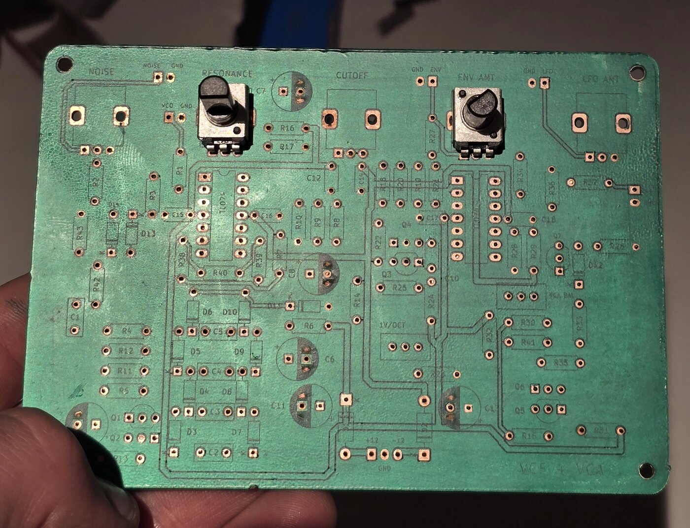
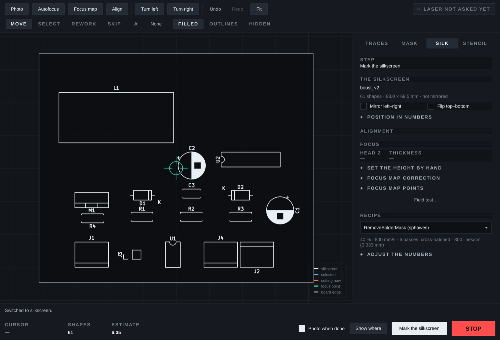

Silkscreen
The laser can mark the board's component side: part outlines, references and text from KiCad's F.Silkscreen. Where it goes depends on the board. On a board with copper on top and a solder mask there, it is marked on the cured mask ink: a light recipe lightens the ink without taking it off. That is proven. On the usual laser board, copper on the bottom only, the component side is the bare laminate: still experimental.

When
- After the traces are etched and checked, and after the solder mask if the board gets one: on the mask, the ink has to be cured and the pads opened first.
- Before you break the tabs: the board is still in its sheet, so it lies flat and square, and its holes are where they were.
- The rail shows a Silkscreen LASER row when the board's folder has a silkscreen layer; the job marks F.Silkscreen. Send to SRM-CAM plots it.
The Silk job is drawn as KiCad shows it, not mirrored: you look at the top from above, as KiCad does. The page sets this itself. Outlined text from KiCad comes with very finely drawn curves; the page simplifies them to 0.01 mm, far finer than the beam, so a board full of text opens in a moment.
On the mask: the top face
A board with copper on top (two-sided, or F.Cu only) whose top face has been masked. The sheet is already top face up from opening F.Mask: leave it there.
- Open the jobClick Silkscreen on the rail. The laser page opens on the Silk job, on the preset Silkscreen on mask · 15 % × 2, rings; its step reads Mark the silkscreen.
- AutofocusPress Autofocus, on the ink. It takes a new photo at that height.
- AlignDrag the drawing within about 25 mm of the board in the photo and press Align. The opened pads and the holes in them are easy to see now; it moves the drawing onto the holes when 55 % of them match.
- Show whereThe blue diode traces the outline on the board, without marking. Or select a few shapes near the corners and press Show 4 in blue, lid open: they should sit where KiCad puts them, beside their pads.
- Mark the silkscreenPress Mark the silkscreen. Then switch to Outlines to check it on the photo. A faint part: Select it and mark it again (Mark 2 selected).
The recipe on the mask
| Preset | Numbers |
|---|---|
| Silkscreen on mask · 15 % × 2, rings (the Silk job's default) | Fiber, 15 %, 1500 mm/s, 30 kHz, 300 lines/cm, 2 passes, concentric rings shape by shape, one way |
- Light on purpose. It lightens the cured ink; it does not burn through it. The mask's own recipe (40 %) goes to copper, so the Silk job has its own list and never opens on that.
- Two passes. One pass is readable; the second gives the contrast in the photo above.
- Big filled shapes. A capacitor's filled minus side gets its rings back to back and nearly scorched on the second pass. If one does, select the big shapes and mark them on their own at a lower power.
- Adjust the numbers shows and changes the recipe. Its Fill list also has the hatch, lines across the whole board; the rings marked the VCF board's top in a fraction of the hatch's time.
On the laminate: a bottom-copper board
The steps work, but no recipe has been proven on bare laminate. The recipe above was made to lighten mask ink, not to mark FR-4. Try it on the waste of the sheet first, and ask in the lab (or Mads) for what works. The board works without a silkscreen.
On the usual laser board the copper is on the bottom (B.Cu), so the component side is the laminate: the sheet is turned over, and the job is lined up on the same drilled holes.
- Peel the KaptonIf the board has a mask, take the tape off the laminate side first. Wipe it clean.
- Turn the sheet overLeft to right, like the page of a book. The laminate is up now. Lay it square to the bed's edges, the board near the middle (where on the bed). Close the lid.
- Open the jobClick Silkscreen on the rail.
- AutofocusPress Autofocus, on the laminate.
- Drag it closeThe job is still where the traces were, but the sheet has been turned over: drag the drawing roughly onto the board in the photo, within about 25 mm.
- AlignPress Align. It finds the drilled holes, seen from this side, in any quarter turn, and moves the drawing onto them.
- Show where, then markAs on the mask, above. Try the recipe on the waste first.

Which face is up, job by job
Then
Break the tabs, clear the holes, and check continuity: Make a board: the finish. The silkscreen off, or mirrored: Troubleshooting.